A photograph
names the crop and finds disease on the leaf.
A wand that reads the soil, sees the crop, and speaks the answer aloud. In Hindi. In about a minute. Standing in the field.
The problem · one soil test
That is one soil test.
So most farmers simply guess.
of Indian farmers work less than two hectares. For them the fee, the wait and the English are each a wall.
Soil channel · RS-485 / Modbus
First reading in real ground · 23 Aug 2026 · unedited
N-P-K are estimated from conductivity, and the wand labels them EST. It never quotes a dose from a guess.
Eye channel · USB camera
Voice channel · Hindi speech
मिट्टी क्षारीय है, जिप्सम डालें।
Your soil is alkaline. Add gypsum.
हर साल 4–5 टन गोबर की खाद। फसल अवशेष जलाएं नहीं।
4–5 tonnes of farmyard manure a year. Never burn crop residue.
इस मिट्टी में बाजरा, ज्वार और आलू अच्छे रहेंगे।
Millet, sorghum and potato will do well in this soil.
Core · on-device rules
names the crop and finds disease on the leaf.
turn the reading into a diagnosis and a dose per acre. No internet needed.
only phrases that finished conclusion, warmly, in Hindi.
If the signal drops, it falls down a ladder. The advice survives every rung.
Teardown · 9 parts
Every part is off the shelf. The body is printed in sections, so one cracked piece can be reprinted alone.
Bench log · measured, not claimed
Photographs · not a render
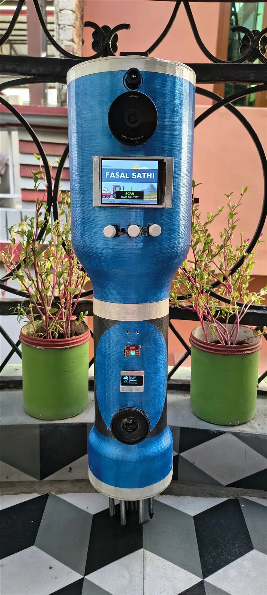
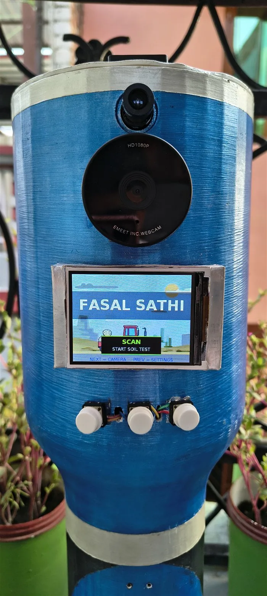
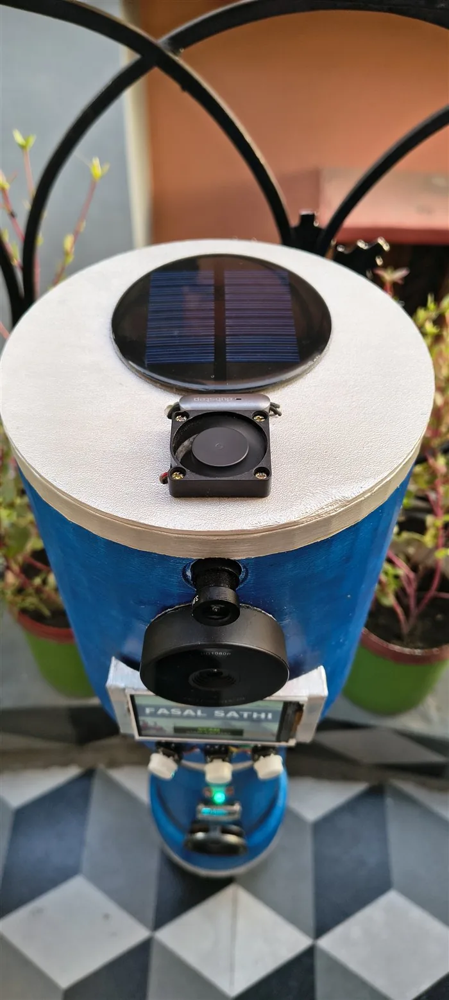
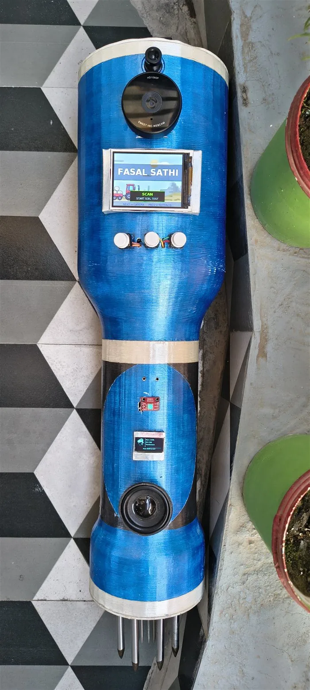
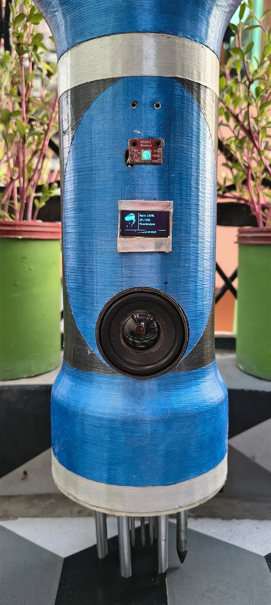
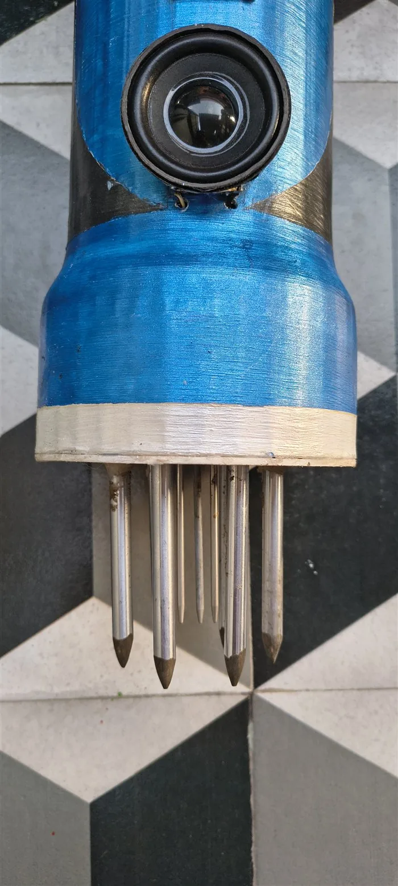
Companion · Android app
The Android app finds the wand over Wi-Fi by itself. No address is ever typed. Every scan, photo and advice is kept per farmer, so one wand can serve every family in a village.
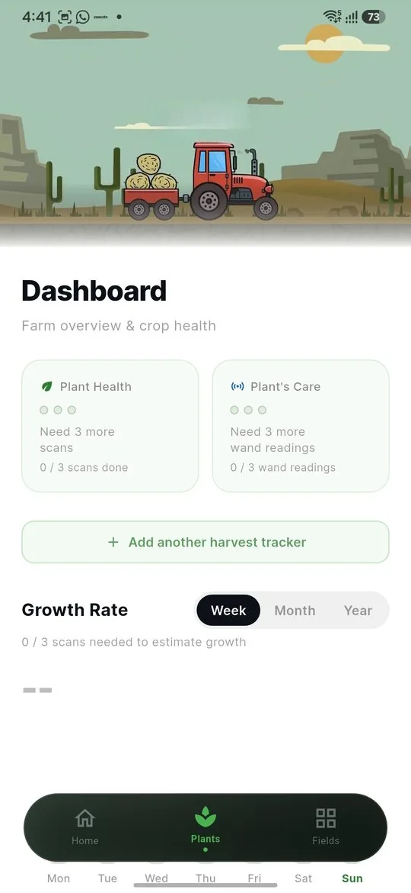
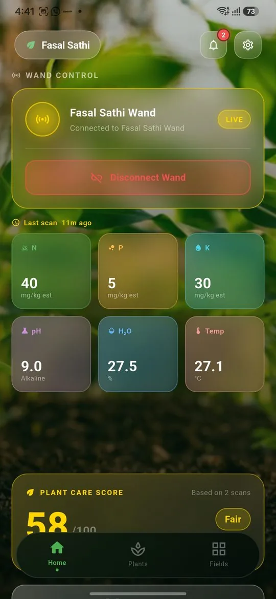
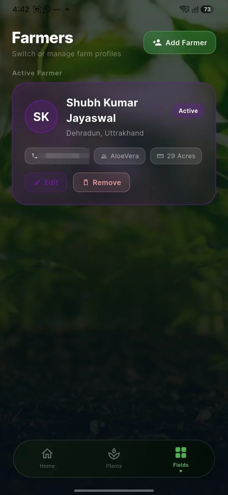
Recognition
Bharat Innovation Challenge 2025–26 · Lovely Professional University, Punjab
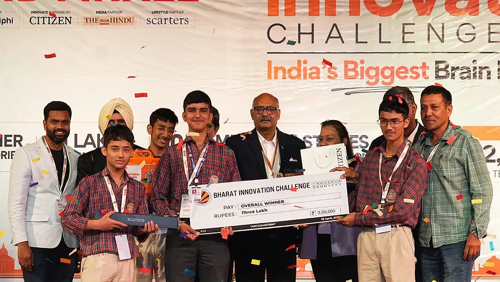
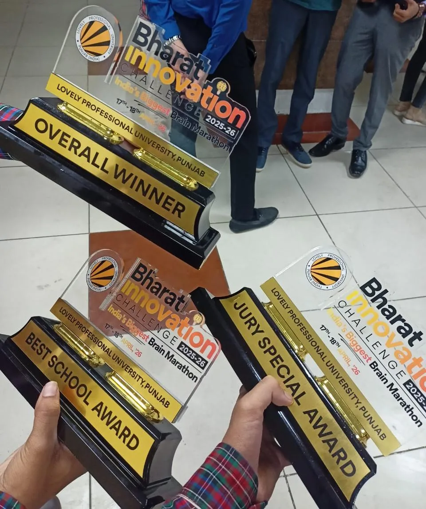
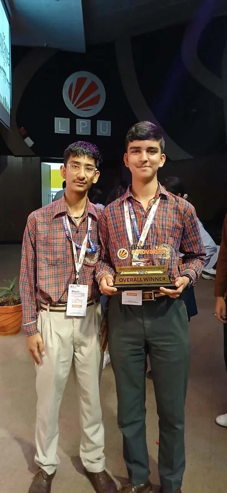
Team Sanketra
Project lead · hardware, firmware, AI, app
Hardware integration
DAV Public School, Defence Colony, Dehradun